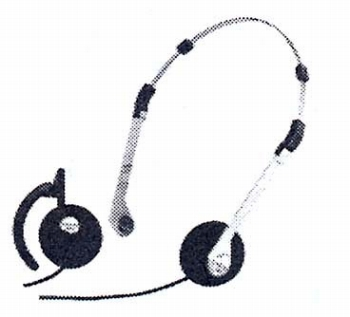
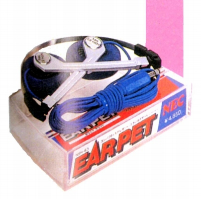

NSH-83


■価格 4,850円■型式 ダイナミック型■振動板 23�oドーム型■インピーダンス 32Ω■再生周波数帯域 20-20,000Hz■許容入力 100mW■感度 98ｄB/mW■コード 1.2m ステレオミニプラグ■重量 24g■発売 1982年6月■販売終了 1984〜85年頃備考 NECブランド名になってからの機種折り畳み型、ヘアバンドをはずし耳掛け型として使用可能 愛称は「イヤペット」
NECのインデックスへ